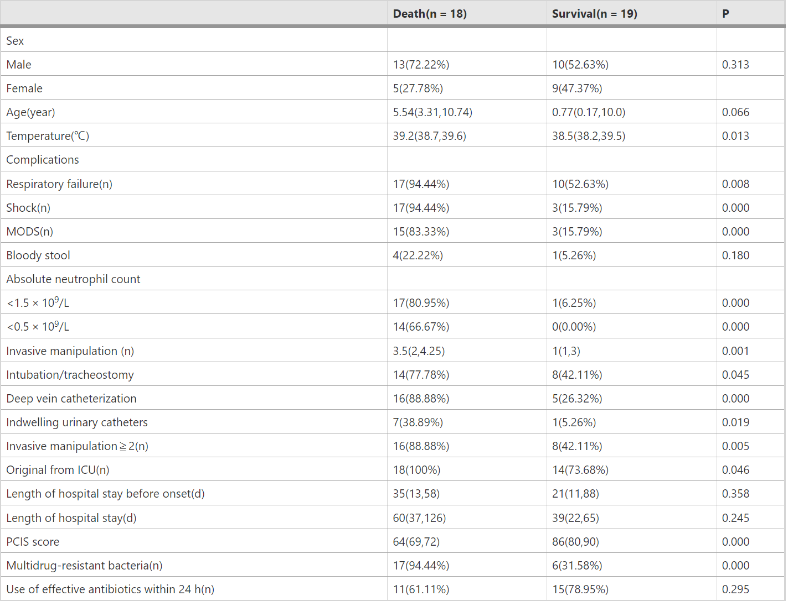

results
Demographics and clinical characteristics
Of the 37 children with AB-BSI included in this study, 23 were males and 14 were females, with a median age of 4.83 (0.60 to 10.15) years, and there were no significant differences in gender and age between these two groups. Among these patients, 18 died (48.65%, 18/37) and 19 survived (51.35%, 19/37). The dead group had a significantly higher incidence of respiratory failure (p = 0.008), shock (p = 0.000), MODS (p = 0.000), neutropenia ( < 1.5 × 109 /L) (p = 0.000) and serious neutropenia (< 0.5 × 109/L) (p = 0.000) than those in the survival group. The median length of hospital stay before onset was 22 (10, 36) days, and the median length of total hospital stay was 57 (33.5,105) days, of which 78.38% (29/37) had total hospital stay more than 30 days. The source of pathogen from ICU ward (including PICU, NICU, SICU) accounted for 86.49% (32/37), and that from general ward was 13.51% (5/37). The proportion of multidrug-resistant (also carbapenem-resistance) AB in the death group was significantly higher than that in the survival group (p = 0.000), while the PICS score was significantly lower in the survival group than that in the death group (p = 0.000). There was no significant difference in effective antibiotic use within 24 h between the two groups (p = 0.295) (Table 1).
image

Underlying disease
Among the 37 children with bloodstream infection of AB, 56.76% (21/37) patients with underlying diseases were haematological disorders and oncology, of which was consisted by 10.81% (4/37) acute lymphoblastic leukemia, 13.51% (5/37) acute myeloid leukemia, 2.70% (1/37) acute mixed cell leukemia, 5.41% (2/37) juvenile myelomonocytic leukemia, 8.11% (3/37) aplastic anemia, 10.81% (4/37) lymphoma and 5.41% (2/37) hemophagocytic lymphohistiocytosis.The number of children with hematologic diseases in the death group was significantly more than that in the survival group (94.44% vs. 21.05%, p = 0.000). But the number of children with neonatal systemic diseases in the survival group was significantly more than those in the death group (31.58% vs. 0%
image